Assignments
Assignment 1 - Basic HTML

This assignment showed me the basic structure of HTML, including headers, sections, footers, and images.
Assignment 2 - Basic HTML

This assignment allowed me to explore CSS elements to create a webpage. I changd the background color, added images, and manipulated tables.
Assignment 3 - Page Layout

This assignment introduced me to Flexblock, which taught me how to create custom website layouts. I also implemented media queries so that the page could be viewed in a mobile view.
Assignment 4 - Main Page CSS
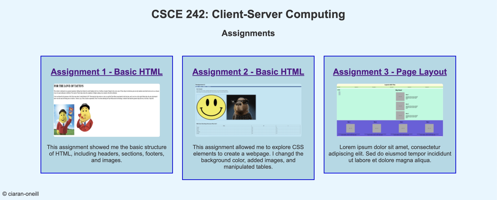For this assignment, I used my newly acquired Fleckblock skills to change the look of my main page, including creating a container for assignments and giving them each their own block. This link will route back to this home page..
Assignment 5 - Recreate CSS Page
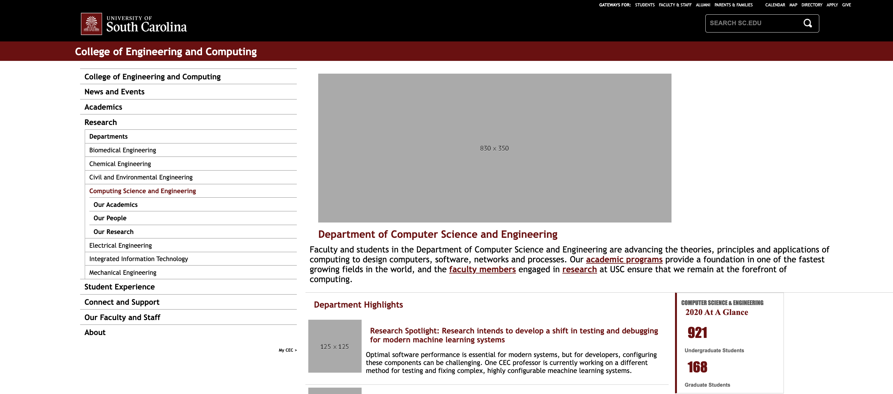This assignment challenged me to recreate a page from the UofSC website using my CSS and HTML skills. It was certainly a challenge, and I had to think about how to segment the page to make it match with the university page.
Assignment 6 - Main Page Projects Section
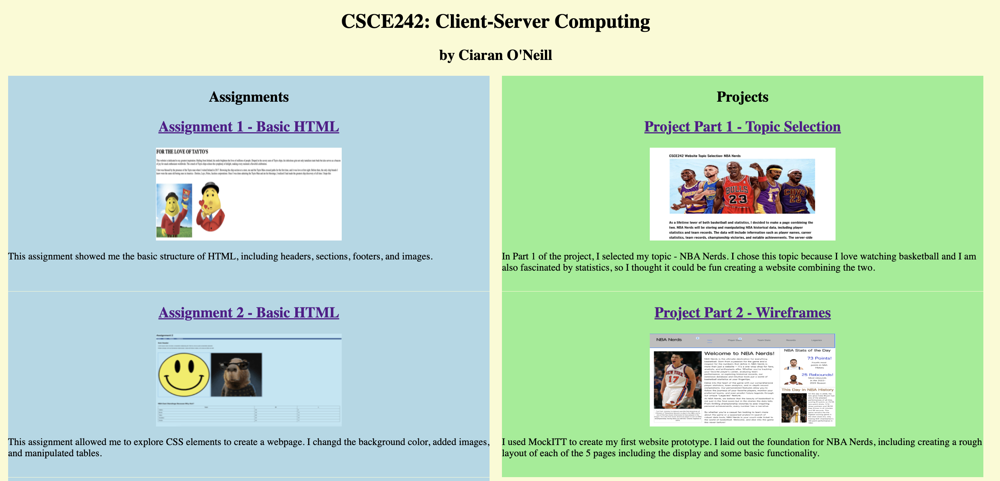This assignment had me create a projects section on this page to display the progress I have made on the Semester project. It allowed me to practice my Flexblock, HTML, and CSS Skills. This link will just route back to this home page.
Assignment 7 - Introduction to JavaScript
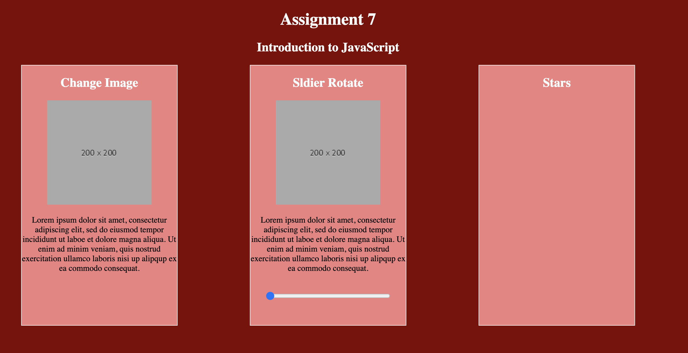This assignment was an introduction to JavaScript and adding interaction to my web pages. I learned how to link a script.js file to the index.html and add various interactive elements such as swapping images, rotating images, and adding images.
Assignment 8 - Conditionals
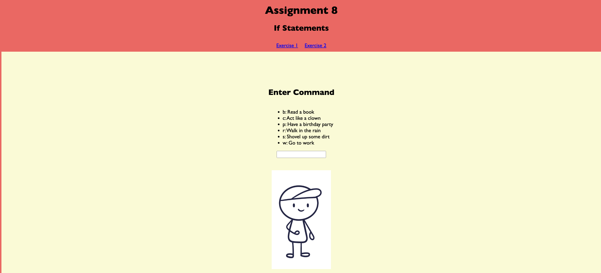This assignment had me tinker around with JavaScript more, challenging me to create if/then functions in JS to alter a webpage by validating text input and sliders.
Assignment 9 - Loops
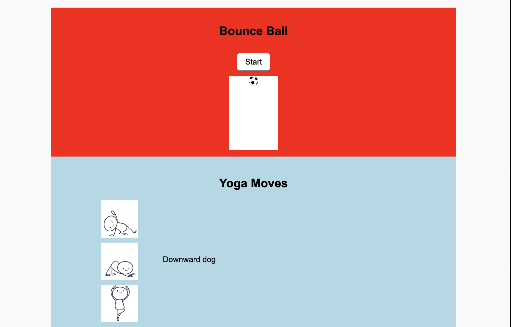This assignment taught me how to use JavaScript for loops and furthered my experience with functions in JavaScript in order to make a ball bounce.
Assignment 10 - Arrays
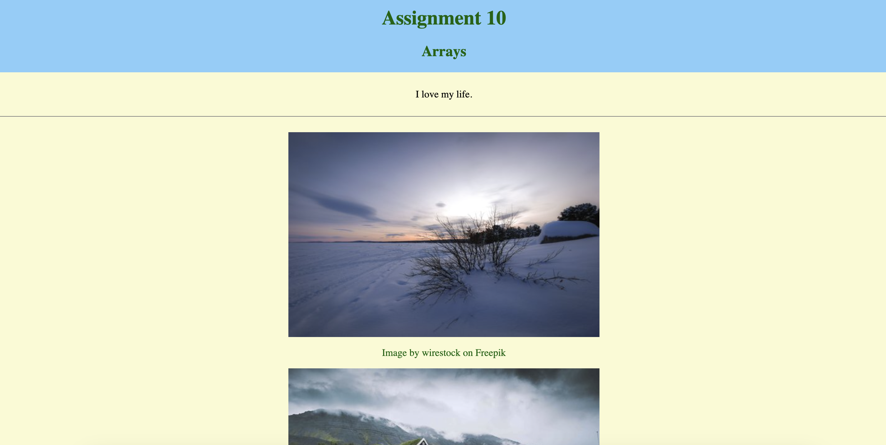This assignment introduced me to arrays in JavaScript, utilizing them to store and loop through text and images.
Assignment 11 - Classes
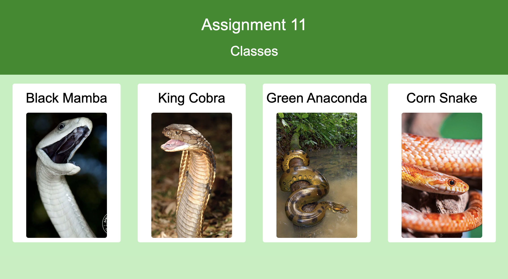This assignment introduced me to classes in JavaScript, utilizing them to create a website about snakes with info. stored in classes.
Assignment 12 - Parsing JSON
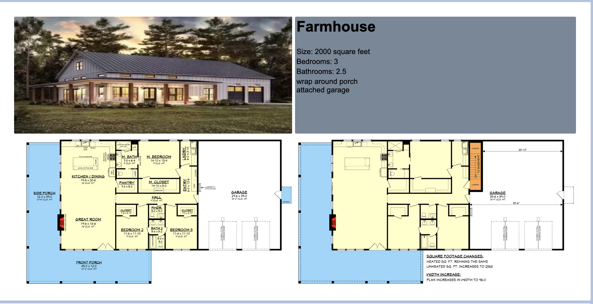This assignment taught me how to parse JSON files onto a webpage, and I did so by loading info about houses from a json file.
Assignment 13 - Using Render
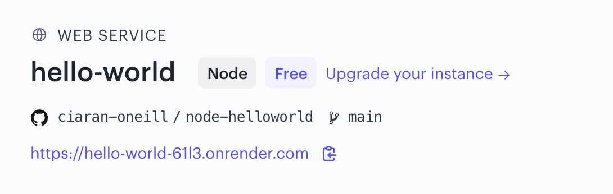 Code Repo Live DemoThis assignment taught me how to use Render to create server apps paired with GitHub.
Assignment 14 - Using Render
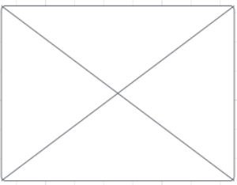 Code Repo Live DemoThis assignment involves creating a Node.js server with Express to serve a JSON array of crafts data.
Projects
Project Part 1 - Topic Selection
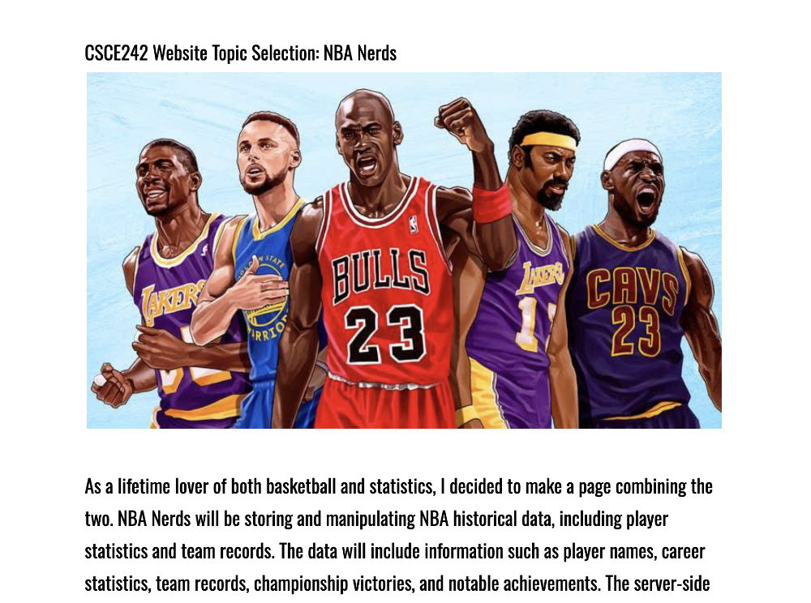In Part 1 of the project, I selected my topic - NBA Nerds. I chose this topic because I love watching basketball and I am also fascinated by statistics, so I thought it could be fun creating a website combining the two.
Project Part 2 - Wireframes
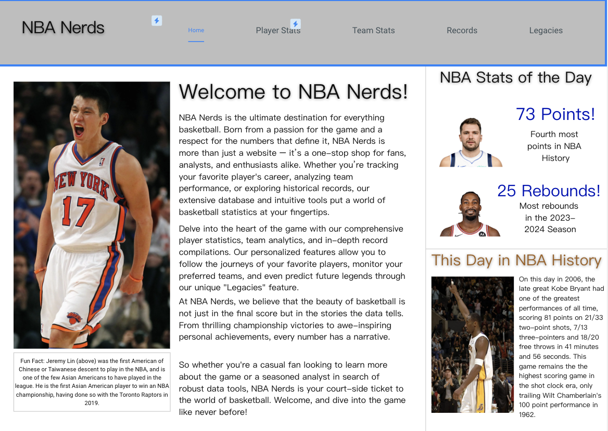I used MockITT to create my first website prototype. I laid out the foundation for NBA Nerds, including creating a rough layout of each of the 5 pages including the display and some basic functionality.
Project Part 3 - HTML & CSS
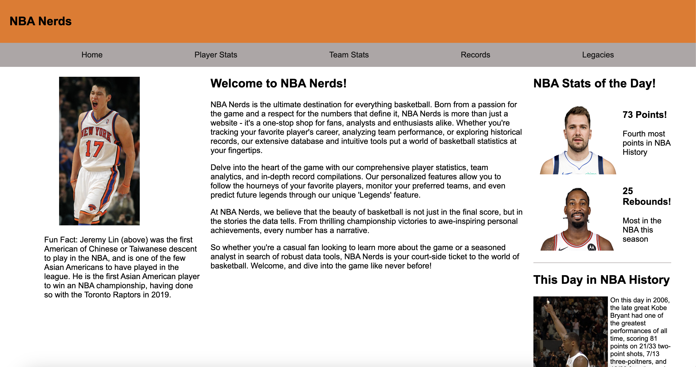In part 3 of the project, I used my HTML and CSS skills in order to create the framework for my NBA Nerds website. I created the layout for all the pages using Flexblock with a basic color scheme that will be changed in the future.
Project Part 4 - Colors, Pictures, Text
I had already implemented most of my pictures and text in part 3, so for part 4 I just filled in all of the remaining placeholders and made some changes to the images and positioning.
Project Part 4.5 - Improving Website
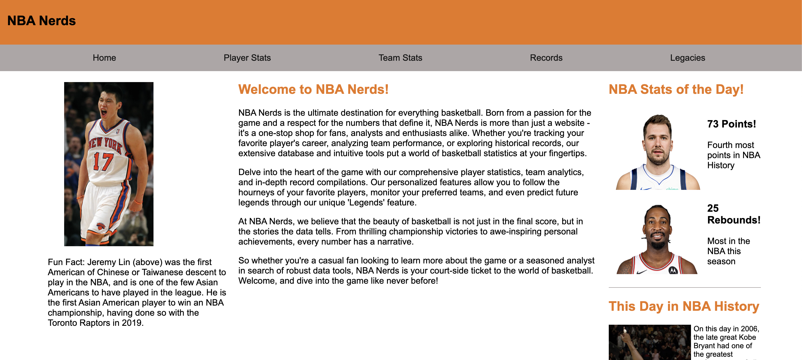I used the feedback from my TA to improve the HTML and CSS of NBA Nerds.
Project Part 5 - JSON File Parsing
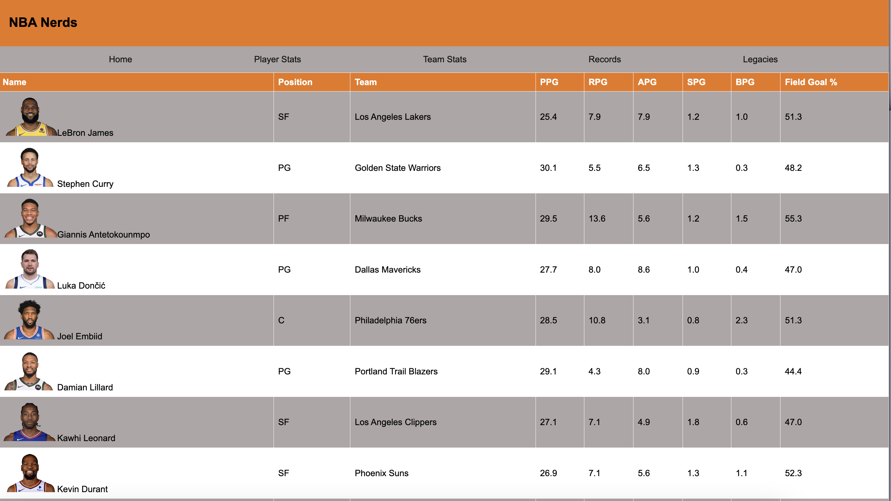Click on the 'Player Stats' page to view the data imported using JSON file parsing.
Project Part 6 - Client Side Form Validation
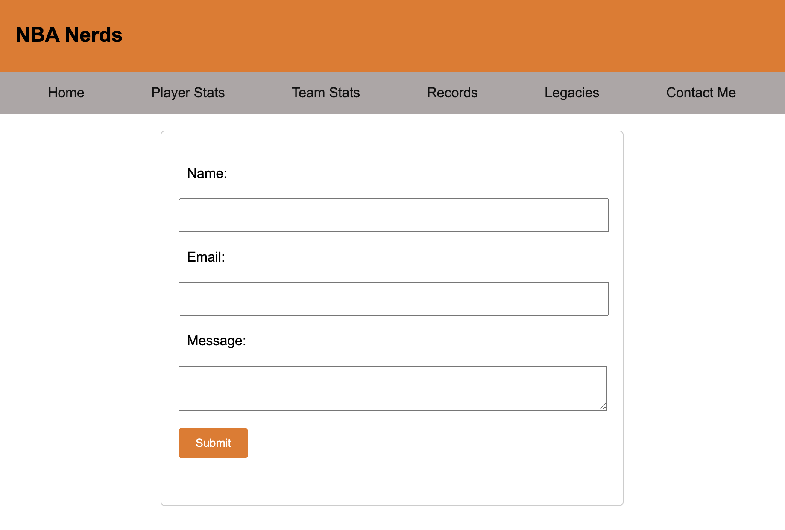Added 'Contact Me' page, added data entry field to 'Player Stats' page, and added an imbedded video to 'Legacies'